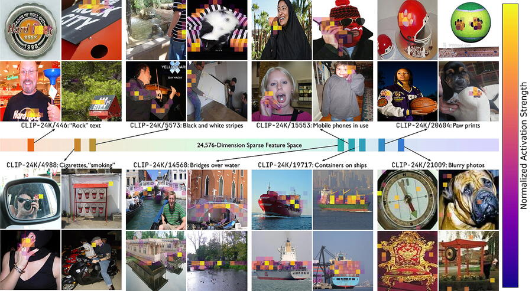

In the rapidly evolving field of AI-powered biology, Imageomics researcher Samuel Stevens announced a major step forward with a new method to help scientists interpret how artificial intelligence understands visual data. The latest work explores sparse autoencoders (SAEs)—a technique designed to reveal the inner workings of language models like BioCLIP, CLIP, and DINOv2.
The newly released preprint and interactive web demos showcase how SAEs can pinpoint the specific features AI models rely on to distinguish between species. For example, the demo illustrates how an SAE-tuned vision transformer (ViT) identifies a bluejay’s blue wing as a defining trait, distinguishing it from a Clark’s nutcracker.
The project, titled "The Sparse Autoencoders for Scientifically Rigorous Interpretation of Vision Models," is led by Stevens, with faculty members Wei-Lun (Harry) Chao, Tanya Berger-Wolf, and Yu Su. The research features the available preprint, code, and models for testing and input.
“AI models are incredibly powerful, but they’re often a black box,” said Stevens. “With sparse autoencoders, we can actually see what the model is paying attention to—not just the final classification, but the key traits it uses to decide. This could be game-changing for researchers studying biological traits, evolution, and AI interpretability.”
The research was supported in part by the Imageomics Institute, which aims to advance AI-powered biological discovery.
Stevens’ research is particularly important for Imageomics, a growing field that uses AI to analyze biological images and uncover new scientific insights. The ability to interpret how AI models identify traits could have broad implications for biodiversity research, conservation, and evolutionary biology.
What’s Next for SAEs?
Beyond species classification, SAEs could help improve trust and transparency in AI-driven biology. By showing how AI reaches its conclusions, researchers can fine-tune models to avoid biases and improve real-world applications. The next steps include testing SAEs on more datasets and refining the technique for wider adoption in biological research.
Stevens and his team invite feedback from the AI and biology communities on both the demo and the preprint, particularly as researchers prepare their submissions for ICCV 2025. The research is now publicly available, and the team is offering support for anyone interested in using SAEs in their own work.
For more details, check out the demo and join the discussion on Twitter and Bluesky.